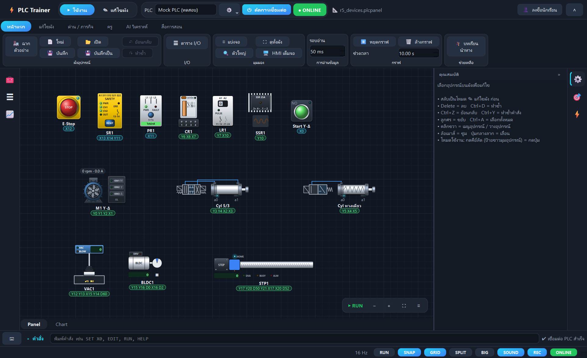
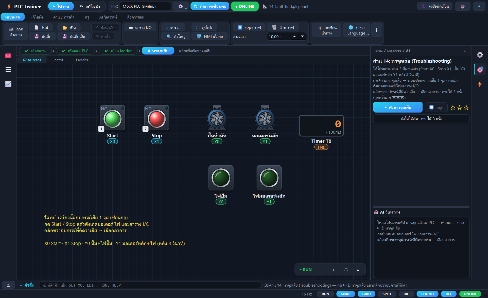

ไม่ต้องติดตั้ง แตกไฟล์แล้วเปิดได้เลยNo installer. Unzip and run.
ดาวน์โหลดไฟล์ zipDownload the zip
กดปุ่มดาวน์โหลด จะได้ไฟล์Use the download button to get PLCTrainer-1.0.0-win64.zip
แตกไฟล์ไว้ที่ไหนก็ได้Unzip anywhere
คลิกขวา → Extract All… เช่นไว้ที่ Desktop หรือแฟลชไดรฟ์ ห้ามย้าย .exe ออกจากโฟลเดอร์Right-click → Extract All… Desktop or a USB drive is fine. Keep the .exe inside its folder.
ดับเบิลคลิก PLCTrainer.exeDouble-click PLCTrainer.exe
โปรแกรมยังไม่ได้เซ็นดิจิทัล Windows อาจเตือนในครั้งแรกThe app isn't code-signed yet, so Windows may warn the first time.
เลือก PLC แล้วเริ่มด่าน 1Pick a PLC and start level 1
ไม่มี GX Works3 ก็เล่นได้ เลือก Mock PLC ส่วนคนที่ใช้ GX Simulator3 ให้สร้างโปรเจกต์ RCPU (เช่น R04CPU) ตั้ง Own Node Settings → Online Change = Enable All (SLMP) แล้วเชื่อมต่อ
No GX Works3? Choose Mock PLC. With GX Simulator3, use an RCPU project (e.g. R04CPU), set Own Node Settings → Online Change = Enable All (SLMP), then connect to
127.0.0.1 : 5511
ฝึกเหมือนอยู่หน้าตู้คอนโทรลPractice like you're at the cabinet
ตรวจจากพฤติกรรมGraded by behaviour
โปรแกรมกดปุ่มให้เองตามโจทย์แล้วดูเอาต์พุต ไม่สนว่าเขียน ladder ทรงไหนThe app presses the inputs for you and watches the outputs. Any ladder that behaves correctly passes.
อุปกรณ์สมจริงRealistic devices
มอเตอร์ Y-Δ, สเต็ปเปอร์, กระบอกสูบ 5/3, รีเลย์นิรภัย, SSR ลากวางและตั้ง address เองStar-delta motor, stepper, 5/3 cylinder, safety relay, SSR. Drag them in and assign your own addresses.
กราฟเทียบคำตอบExpected vs. actual
เส้นประสีขาวคือค่าที่ควรได้ จุดที่ผิดเป็นสีแดง กดข้อที่ตกแล้วกราฟเลื่อนไปที่เวลานั้นWhite dashes show what should happen and red marks the failures. Click a failed check to jump to that moment.
เครื่องมือครูTeacher tools
โหมดสอบล็อกด้วยรหัสครู ตารางคะแนนทั้งห้อง Export Excel และตัวแก้ไขด่านPassword-locked exam mode, a class score table with Excel export, and a level editor.
ด่านหาจุดเสียFault-finding
ระบบซ่อนความเสีย 1 จุด เช่น สายขาดหรือหน้าสัมผัสค้าง ให้นักเรียนสังเกตอาการแล้วทายOne hidden fault, like a broken wire or a welded contact. Students watch the symptoms and name it.
สองภาษา ใช้ออฟไลน์Two languages, offline
ใช้งานได้โดยไม่ต้องต่ออินเทอร์เน็ต AI วิเคราะห์ข้อผิดพลาดก็ทำงานในเครื่องWorks without internet, including the mistake analyser.


เครื่องในห้องแล็บทั่วไปก็พอAny lab PC will do
| รายการItem | ที่ต้องมีNeeded |
|---|---|
| ระบบOS | Windows 10 / 11 64-bit |
| ไฟล์ดาวน์โหลดDownload | 75 MB (zip) |
| PLC | Mock PLC ในตัว หรือ GX Works3 + GX Simulator3 (โปรเจกต์ RCPU) หรือ PLC จริงที่ตอบ SLMPBuilt-in Mock PLC, or GX Works3 + GX Simulator3 (RCPU project), or a real PLC that answers SLMP |
| ข้อมูลผู้ใช้Your data | %APPDATA%\PLCTrainer (คะแนน ผัง การตั้งค่า)(scores, panels, settings) |
| อินเทอร์เน็ตInternet | ไม่ต้องใช้ ยกเว้นตอนกดเช็กเวอร์ชันใหม่Not needed, except when you press Check for updates |
คำถามที่พบบ่อยFAQ
ใช้ฟรีจริงไหมIs it really free?
ฟรีทุกฟีเจอร์ ไม่มีโฆษณา ถ้าโปรแกรมช่วยได้ สนับสนุนได้จากปุ่ม ☕ ในโปรแกรมEvery feature is free and there are no ads. If it helps you, the ☕ button in the app lets you chip in.
โปรเจกต์ FX5U ใช้กับ GX Simulator3 ได้ไหมDoes an FX5U project work with GX Simulator3?
ยังไม่ได้ GX Simulator3 ตอบ SLMP เฉพาะโปรเจกต์ RCPU เท่านั้น ให้สร้างโปรเจกต์ R04CPU สำหรับฝึก หรือใช้ Mock PLCNot yet. GX Simulator3 only answers SLMP for RCPU projects, so create an R04CPU project for practice or use the Mock PLC.
อัปเดตเวอร์ชันใหม่ยังไงHow do I update?
ช่วยเหลือ → ℹ เกี่ยวกับ → 🔄 เช็กเวอร์ชันใหม่ ถ้ามีรุ่นใหม่ให้ดาวน์โหลด zip มาแตกทับ คะแนนและผังที่อยู่ใน %APPDATA%\PLCTrainer จะไม่หายHelp → ℹ About → 🔄 Check for updates. Unzip the new version over the old one. Scores and panels in %APPDATA%\PLCTrainer stay put.
ใช้สอนทั้งห้องได้ไหมCan I use it with a whole class?
ได้ นักเรียนลงชื่อเข้าใช้ คะแนนเก็บแยกรายคน ครูเปิดตารางคะแนนและ Export เป็น Excel ได้ โหมดสอบปิด AI และการแก้ผังจนกว่าครูจะใส่รหัสYes. Students log in and scores are kept per student. Teachers can view the score table and export it to Excel. Exam mode disables AI hints and panel editing until the teacher enters a password.
ช่วยให้มีด่านใหม่ ๆHelp fund new levels
เงินสนับสนุนใช้พัฒนา Ladder editor และ PLC จำลองในตัว เพื่อให้ฝึกได้แม้เครื่องไม่มี GX Works3Support goes toward a built-in ladder editor and soft-PLC, so students can practise without GX Works3.